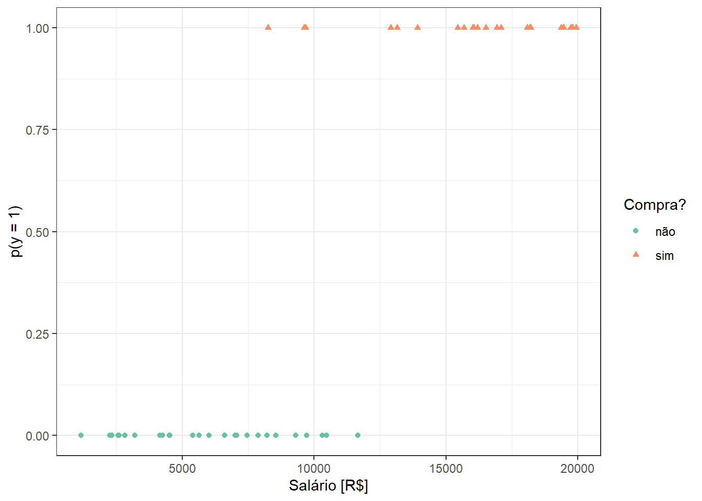
13 Classificação via regressão logística
13.1 Regressão logística binária simples
Seja um supervisor uma variável categórica com duas categorias, \(y \in \{c_1,c_2\}\), dita binária ou dicotômica, a qual suspeita-se ser dependente de uma única variável contínua ou real, \(x\), \(x \in \mathcal{R}\). Respostas binárias incluem categorias “sim” e “não” ou “sucesso” e “fracasso”. Um modelo de regressão logística visa prever a probabilidade de sucesso dado um valor de x, isto é \(p(y=sucesso|x)\). O sucesso deve ser entendido não literalmente, mas como a categoria de mais interesse a ser prevista. Obviamente, a remanescente terá probabilidade complementar e é dita categoria de referência.
Considere o caso onde deseja-se prever se a pessoa compra ou não um iphone de última geração tomando como variável independente o seu salário. Tais categorias são codificadas respectivamente em 1 e 0. A Figura 13.1 ilustra algumas observações de tal problema, onde o salário é plotado no eixo horizontal e indivíduos que não compraram iphone são marcados em círculos vermelhos e codificado em zero no eixo vertical, enquanto indivíduos que compraram são marcados em triângulos azuis e codificados em 1 no eixo vertical.
Inicialmente, alguém poderia pensar em estimar uma reta via mínimos quadrados para prever a probabilidade do indivíduo comprar o iphone segundo o seu salário, isto é:
\[ p(y=1|x) =\beta_0+\beta_1x \]
Tal procedimento resultaria na regressão da Figura 13.2. O problema é que a reta obtida prevê probabilidades negativas para salários menores que R$3200 reais e probabilidades maiores que 1 para salários maiores que R$19300. Tais previsões são inapropriadas, uma vez que \(p(y) \in [0,1]\).
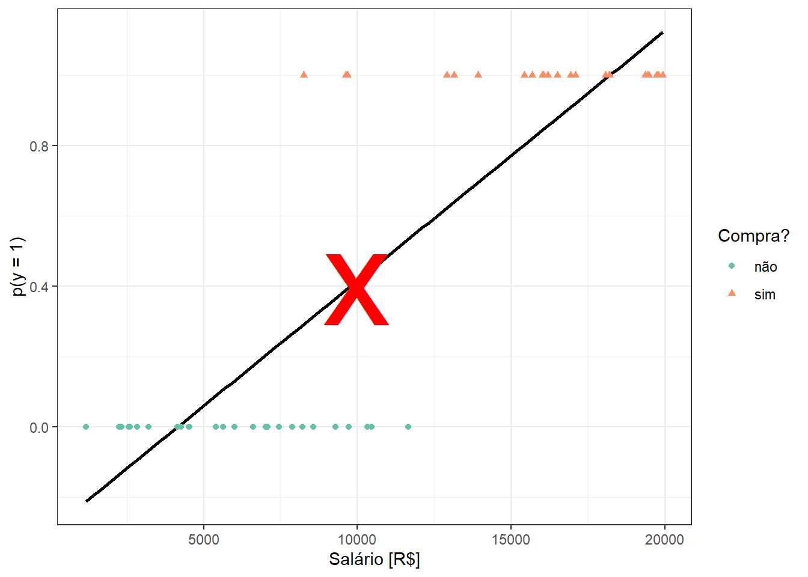
Para garantir previsões no domínio da probabilidade, podem ser aplicadas diversas funções. A função logit ou sigmoid é uma delas. Esta função é definida matematicamente segundo a Equação 13.1 e plotada na Figura 13.3.
\[ p(z)=\frac{1}{1+e^{-z}}=\frac{e^z}{e^z+1} \tag{13.1}\]
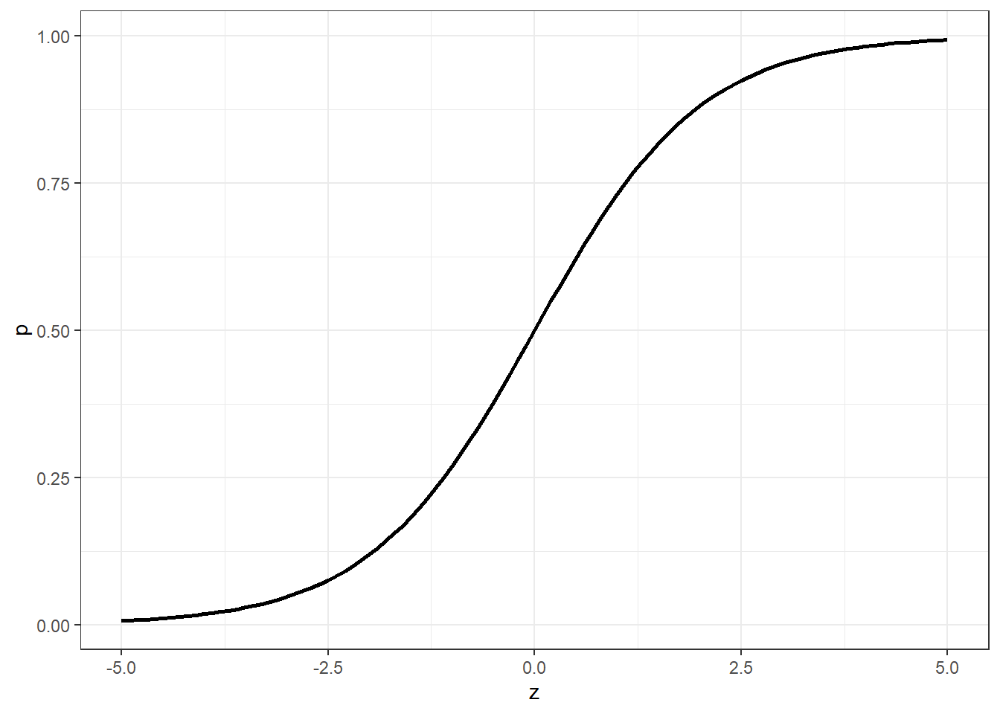
Aplicando um modelo linear em função da variável independente em tal função, isto é, fazendo \(z=\beta_0+\beta_1x\), obtém-se o modelo de regressão logística, conforme Equação 13.2.
\[ p(y=1|x) = \frac{1}{1 + e^{-(\beta_0+\beta_1x)}} \tag{13.2}\]
O ajuste de um modelo de regressão logística para o exemplo do iphone resulta na função plotada na Figura 13.4.
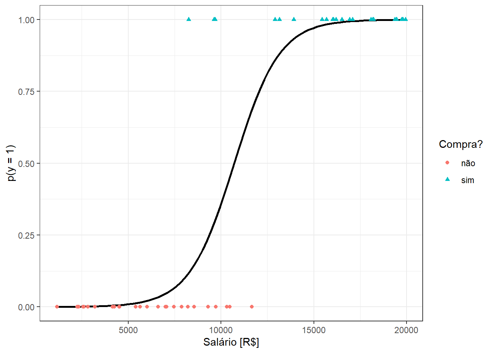
Sabendo que a probabilidade da outra classe é o complementar, isto é, \(p(y=0|x)=1-p(y=1|x)\), pode-se obter o inverso da função logit, ou mais diretamente, da função de regressão logística, conforme segue.
\[ \begin{matrix} p(y=0|x)=1-p(y=1|x) \\ p(y=0|x)=1-\frac{1}{1 + e^{-(\beta_0+\beta_1x)}} \\ p(y=0|x)=\frac{1 + e^{-(\beta_0+\beta_1x)}-1}{1 + e^{-(\beta_0+\beta_1x)}} \\ p(y=0|x)=\frac{e^{-(\beta_0+\beta_1x)}}{1 + e^{-(\beta_0+\beta_1x)}} \\ \end{matrix} \]
Tomando a razão entre \(p(y=1|x)\) e \(1-p(y=1|x)\) ou \(p(y=0|x)\), chamada de razão de chance ou odds ratio, segundo a Equação 13.3.
\[ \frac{p(y=1|x)}{1-p(y=1|x)} = e^{\beta_0+\beta_1x}. \tag{13.3}\]
Tal razão tem domínio entre 0 e \(\infty\), com uma razão unitária indicando chance igual de ocorrência de ambos grupos, uma razão maior que 1 indicando maior chance de ocorrência do grupo 1 e uma razão menor que 1 indicando maior probabilidade de ocorrência do grupo 0. Aplicando logaritmo em ambos os lados da Equação 13.3, verifica-se que o modelo de regressão logística (entenda-se aqui log como o logaritmo neperiano), obtido a partir da aplicação da função logit, pode ser concebido como um modelo de regressão linear simples para o log da razão de chance, segundo a Equação 13.4. O lado esquerdo da relação é chamado de log-odds ou logit.
Importante
O logit viabiliza a obtenção da subtração das probabilidades em escala log, \(\text{log }\frac{p}{(1-p)} = \text{log } p - \text{log }(1-p)\), o que facilita a otimização. Ademais, o logit permite converter a função de regressão logística, a qual tem domínio entre 0 e 1, para uma função que tem domínio em \((-\infty,+\infty)\).
\[ \text{log } \biggl(\frac{p(y=1|x)}{1-p(y=1|x)}\biggr) = \beta_0+\beta_1x \tag{13.4}\]
13.2 Estimativa dos coeficientes do modelo de regressão logística
A estimativa dos coeficientes do modelo de regressão é realizada pela maximização da função de verossimilhança ou do log desta. Para simplificar a notação, considere \(p(y_i|x_i,\beta_0,\beta_1)=p(x_i)\). Seja o log da máxima verossimilhança expresso conforme segue.
\[ \begin{align} \ell(\beta_0,\beta_1) &= \text{log } \prod_{i=1}^np(x_i) \\ \ell(\beta_0,\beta_1) &= \text{log } \prod_{i=1}^n p(x_i)^{y_i}\bigl[1-p(x_i)\bigr]^{1-y_i}\\ \ell(\beta_0,\beta_1) &= \sum_{i=1}^n \text{log } \bigl\{ p(x_i)^{y_i}\bigl[1-p(x_i)\bigr]^{1-y_i} \bigr\} \\ \ell(\beta_0,\beta_1) &= \sum_{i=1}^n y_i\text{log } p(x_i) + (1-y_i)\text{log }\bigl[1-p(x_i)\bigr] \\ \ell(\beta_0,\beta_1) &= \sum_{i=1}^n y_i\text{log } \Bigl( \frac{p(x_i)}{1-p(x_i)} \Bigr) + \text{log }\bigl[1-p(x_i)\bigr] \\ \ell(\beta_0,\beta_1) &= \sum_{i=1}^n y_i(\beta_0+\beta_1x_i) + \text{log } \Bigl(1- \frac{1}{1+e^{-(\beta_0+\beta_1x_i)}} \Bigr) \\ \ell(\beta_0,\beta_1) &= \sum_{i=1}^n y_i(\beta_0+\beta_1x_i) + \text{log } \Bigl( \frac{e^{-(\beta_0+\beta_1x_i)}}{1+e^{-(\beta_0+\beta_1x_i)}} \times \frac{e^{(\beta_0+\beta_1x_i)}}{e^{(\beta_0+\beta_1x_i)}} \Bigr) \\ \ell(\beta_0,\beta_1) &= \sum_{i=1}^n y_i(\beta_0+\beta_1x_i) + \text{log } \Bigl( \frac{1}{1+ e^{(\beta_0+\beta_1x_i)}} \Bigr) \\ \ell(\beta_0,\beta_1) &= \sum_{i=1}^n y_i(\beta_0+\beta_1x_i) - \text{log } \bigl( 1+ e^{(\beta_0+\beta_1x_i)} \bigr) \\ \end{align} \]
Considerando o modelo de regressão logística em notação matricial, podemos reescrever a função do log da verossimilhança, conforme Equação 13.5.
\[ \ell(\beta) = \sum_{i=1}^N y_i(\beta^T\mathbf{x}_i) - \text{log } \bigl( 1+ e^{(\beta^T\mathbf{x}_i)} \bigr) \\ \tag{13.5}\]
O vetor \(\beta\) considera ambos os coeficientes \(\beta = [\beta_0,\beta_1]^T\) enquanto o vetor \(\mathbf{x}_i\) considera a constante e a observação da variável regressora, \(\mathbf{x}_i = [1,x]^T\). Para maximizar o log da verossimilhança, igualamos a derivada da função ou gradiente a zero, isto é:
\[ \begin{align} \frac{\partial \ell(\beta)}{\partial \beta} &= \frac{\partial }{\partial \beta} \sum_{i=1}^N y_i(\beta^T\mathbf{x}_i) - \text{log } \bigl( 1+ e^{(\beta^T\mathbf{x}_i)} \bigr) \\ \frac{\partial \ell(\beta)}{\partial \beta} &= \sum_{i=1}^N y_i\mathbf{x}_i - \frac{e^{\beta^T\mathbf{x}_i}}{1+e^{\beta^T\mathbf{x}_i}}\mathbf{x}_i \\ \frac{\partial \ell(\beta)}{\partial \beta} &= \sum_{i=1}^N y_i\mathbf{x}_i - \frac{1}{1+e^{-\beta^T\mathbf{x}_i}}\mathbf{x}_i \\ \frac{\partial \ell(\beta)}{\partial \beta} &= \sum_{i=1}^N y_i\mathbf{x}_i - p(\mathbf{x}_i,\beta)\mathbf{x}_i \\ \frac{\partial \ell(\beta)}{\partial \beta} &= \sum_{i=1}^N \mathbf{x}_i(y_i - p(\mathbf{x}_i,\beta)) = 0 \\ \end{align} \]
Tal resultado consite em um sistema de duas equações não-lineares para o caso simples. Para resolver este problema pode-se usar o método de Newton-Raphson. Este requer, além do gradiente, a derivada segunda ou a Hessiana da função do log da verossimilhança, conforme Equação 13.6.
\[ \frac{\partial^2 \ell(\beta)}{\partial \beta \partial\beta^T} = \sum_{i=1}^N \mathbf{x}_i\mathbf{x}_i^Tp(\mathbf{x}_i,\beta)(y_i - p(\mathbf{x}_i,\beta)) \tag{13.6}\]
Uma atualização de \(\beta\) é obtida conforme Equação 13.7.
\[ \beta_{t+1}=\beta_t - \Biggl(\frac{\partial^2 \ell(\beta)}{\partial \beta \partial\beta^T}\Biggr)^{-1}\frac{\partial \ell(\beta)}{\partial \beta} \tag{13.7}\]
Considere o caso onde deseja-se prever a espécie de árvores frutíferas em função do comprimento da folha. Considere as primeiras linhas expostas na Tabela 13.1 de um conjunto de dados com observações de 85 folhas.
| especie | majoraxis |
|---|---|
| limao | 1.4968 |
| limao | 3.0188 |
| limao | 2.2364 |
| mexerica | 1.1567 |
| mexerica | 3.0577 |
| mexerica | 1.6405 |
Seja um modelo de regressão logística para tal caso considerando como observações de treino 60% das observações disponíveis tomadas aleatoriamente.
| term | estimate | std.error | statistic | p.value |
|---|---|---|---|---|
| (Intercept) | −8.44 | 2.29 | −3.68 | 0.00 |
| majoraxis | 4.48 | 1.26 | 3.55 | 0.00 |
O coeficiente relacionado ao comprimento da folha, \(\beta_1 = -4,48\), apresenta significância estatística, \(p-value = 0 < 0,05\). No caso da regressão logística, os coeficientes do modelo não podem ser diretamente interpretados considerando a probabilidade prevista, mas sim o log da razão de chance, viabilizando interpretação similar à dos coeficientes de regressão linear simples. Tal modelo é plotado na Figura 13.5. Pode-se observar que o como \(\beta_1<0\) a probabilidade de ser mexerica é mais provável quando o comprimento da folha é mais baixo, sendo a curva logit invertida.
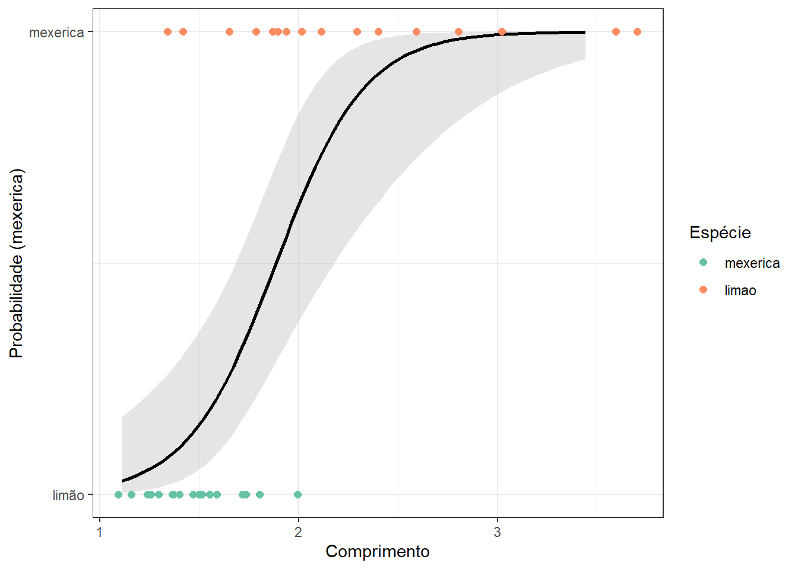
O modelo obtido no exemplo pode ser escrito conforme Equação 13.8. Tal modelo é útil para prever a probabilidade de a árvore ser de mexerica em função do comprimento da folha.
\[ p(y=1|x) = \frac{1}{1 + e^{-(8,44-4,48x)}} \tag{13.8}\]
13.3 Regressão logística binária múltipla
Seja o caso onde deseja-se estudar a probabilidade de sucesso de uma variável de resposta categórica binária em função de múltiplos preditores, \(x_1,x_2,\ldots,x_k\), \(p(y=1|x_1,x_2,\ldots,x_k)\).
Um modelo de regressão logística múltipla pode ser escrito conforme Equação 13.9.
\[ p(y=1|\mathbf x) = \frac{1}{1 + e^{-(\beta_0+\beta_1x_1+\beta_2x_2+\ldots+\beta_kx_k)}} \tag{13.9}\]
Considerando ainda o caso onde deseja-se prever se a folha é de mexerica ou de limão, porém, não apenas em função do comprimento da folha, mas também em função do raio mínimo, sejam as primeiras observações do conjunto de dados expostas na Tabela 13.2.
| especie | majoraxis | radius.min |
|---|---|---|
| mexerica | 1.2519 | 0.3521 |
| mexerica | 1.4670 | 0.3232 |
| limao | 1.7167 | 0.4586 |
| mexerica | 1.3325 | 0.3918 |
| limao | 1.9393 | 0.2853 |
| limao | 1.9357 | 0.3549 |
Seja um modelo de regressão logística para tal caso, tomando novamente 60% das observações disponíveis parta treino. A Tabela 13.3 expõe os resultados. Os dois preditores considerados são estatisticamente significativos. No caso múltiplo é importante normalizar as variáveis.
| term | estimate | std.error | statistic | p.value |
|---|---|---|---|---|
| (Intercept) | 2.49 | 1.18 | 2.11 | 0.04 |
| majoraxis | 3.52 | 1.33 | 2.64 | 0.01 |
| radius.min | 3.66 | 1.48 | 2.48 | 0.01 |
Nota
O modelo de regressão logística apresenta pressuposições similares ao modelo de regressão obtido por mínimos quadrados, tais como: independência das observações, linearidade dos dados, homogeneidade dos erros, independência dos erros e ausência de multicolinearidade. Entretanto, neste curso será dada mais ênfase na interpretação e capacidade de generalização dos modelos.
Conforme já discutido, o modelo de regressão logística é útil para prever a probabilidade de ocorrência de uma classe de interesse. No entanto, em aprendizado deseja-se classificar observações futuras. Para usar um modelo de regressão logística para tal fim, deve-se discretizar a probabilidade considerando um valor de corte de interesse, geralmente \(p=0,5\).
\[ \biggl\{ \begin{matrix} \hat{y}=1\text{, se } p(y=1|\mathbf{x}) \geq 0,5 \\ \hat{y}=0\text{, se } p(y=1|\mathbf{x}) < 0,5 \\ \end{matrix} \]
A matriz de confusão da Tabela 13.4 apresenta os resultados do modelo de regressão logística aplicados aos 40% dos dados separados para teste para o exemplo de classificação de folhas. Pode-se observar que o modelo classifica corretamente 29 folhas, resultando em 4 falsos positivos (mexerica), e 1 falso negativo (limão). Para o exemplo a acuracidade é de 85,29%.
Nota
Em alguns problemas de classificação binária, a definição da classe positiva é arbitrária. Porém, em outros é determinante. Por exemplo, em problemas de diagnóstico médico, geralmente considera-se positiva a classe infectado, doente ou maligno, pois minimizar os falsos negativos é prioritário.
| Previsto | mexerica | limao |
|---|---|---|
| mexerica | 17 | 4 |
| limao | 1 | 12 |
O gráfico da Figura 13.6 apresenta a fronteira de classificação, \(p=0,5\), do modelo de regressão logística múltipla obtido. Os dados de teste são plotados de forma sobreposta, possibilitando um melhor entendimento da matriz de confusão.
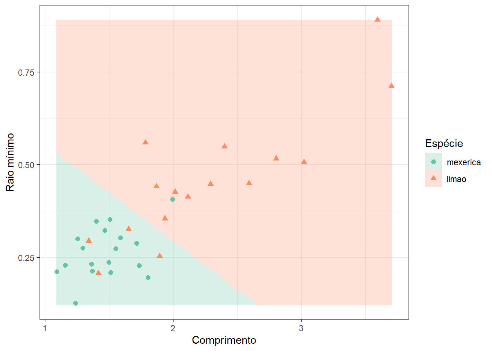
A Figura 13.7 apresenta a curva ROC para o exemplo, com AUC = 0,91, apresentado boa capacidade de previsão.
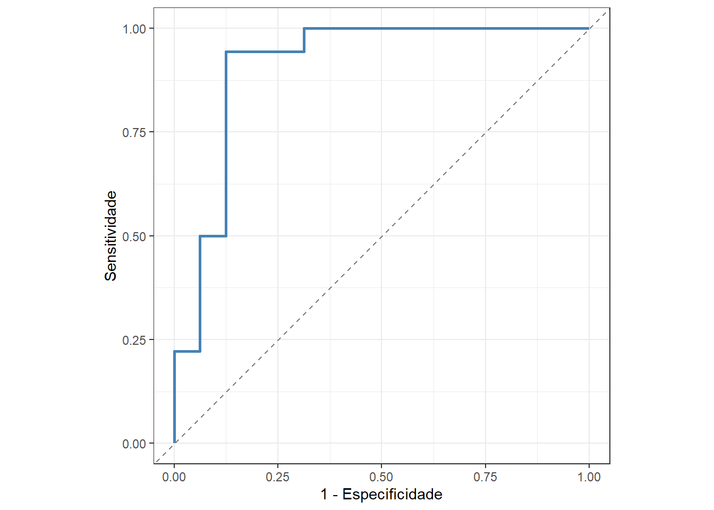
A Figura 13.8 resume as métricas de ajuste para o modelo que considera o comprimento e o raio mínimo. Observa-se que o modelo apresenta maior sensitividade que especificidade, isto é, acerta mais ao prever a classe positiva (mexerica) que a negativa (limão).
| Métrica | Valor |
|---|---|
| Acurácia | 0.85 |
| Sensitividade | 0.94 |
| Especificidade | 0.75 |
| roc_auc | 0.91 |
Consideremos outras variáveis regressoras no modelo de regressão logística, conforme Tabela 13.5.
| especie | area | perimeter | radius.mean | radius.sd | radius.min | radius.max | majoraxis | eccentricity |
|---|---|---|---|---|---|---|---|---|
| mexerica | 0.8641 | 2.9020 | 0.4849 | 0.0937 | 0.3521 | 0.6567 | 1.2519 | 821 |
| mexerica | 0.9366 | 3.5518 | 0.5371 | 0.1622 | 0.3232 | 0.8701 | 1.4670 | 888 |
| limao | 1.4190 | 3.8659 | 0.6412 | 0.1326 | 0.4586 | 0.8697 | 1.7167 | 827 |
| mexerica | 1.0189 | 3.1036 | 0.5220 | 0.0957 | 0.3918 | 0.7026 | 1.3325 | 805 |
| limao | 1.1893 | 4.2011 | 0.6333 | 0.2154 | 0.2853 | 1.0440 | 1.9393 | 924 |
| limao | 1.3639 | 4.2458 | 0.6626 | 0.1960 | 0.3549 | 1.0453 | 1.9357 | 900 |
Pode-se observar nos resultados da Tabela 13.6 que nenhuma variável foi estatisticamente significativa no modelo completo. A adição de diversas variáveis não necessariamente implica em um melhor modelo de regressão logística.
| term | estimate | std.error | statistic | p.value |
|---|---|---|---|---|
| (Intercept) | −12.17 | 23,562.08 | 0.00 | 1.00 |
| area | −1,351.56 | 516,708.39 | 0.00 | 1.00 |
| perimeter | −998.76 | 571,453.01 | 0.00 | 1.00 |
| radius.mean | 1,133.03 | 600,708.92 | 0.00 | 1.00 |
| radius.sd | −357.23 | 299,019.30 | 0.00 | 1.00 |
| radius.min | 156.19 | 131,105.72 | 0.00 | 1.00 |
| radius.max | 850.52 | 536,373.38 | 0.00 | 1.00 |
| majoraxis | 682.10 | 359,688.07 | 0.00 | 1.00 |
| eccentricity | −168.95 | 128,841.45 | 0.00 | 1.00 |
A matriz de confusão obtida é apresentada na Tabela 13.7. Pode-se observar que a acuracidade é igual à do modelo anterior. A Tabela 13.8 apresenta as métricas de desempenho do modelo para os dados de teste. De forma análoga ao modelo anterior, o modelo apresenta mais sensitividade que especificidade. Em relação à área abaixo da curva ROC o modelo atual apresenta pior desempenho que àquele em função de duas variáveis.
| Previsto | mexerica | limao |
|---|---|---|
| mexerica | 17 | 4 |
| limao | 1 | 12 |
| Métrica | Valor |
|---|---|
| Acurácia | 0.85 |
| Sensitividade | 0.94 |
| Especificidade | 0.75 |
| roc_auc | 0.87 |
13.4 Regressão logística multinomial
Considere o caso onde a variável dependente apresenta mais de duas classes, \(y \in \{c_1,c_2,\ldots,c_Q\}\), \(Q>2\). Um modelo de regressão logística multinomial simples pode ser escrito de acordo com a Equação 13.10.
\[ \begin{align} \text{log } \biggl(\frac{p(y=1|x)}{p(y=Q|x)}\biggr) &= \beta_{10}+\beta_1x \\ \text{log } \biggl(\frac{p(y=2|x)}{p(y=Q|x)}\biggr) &= \beta_{20}+\beta_2x \\ \vdots \\ \text{log } \biggl(\frac{p(y=Q-1|x)}{p(y=Q|x)}\biggr) &= \beta_{(Q-1)0}+\beta_{(Q-1)}x \\ \end{align} \tag{13.10}\]
O modelo foi especificado considerando \(Q-1\) transformações logit. A classe considerada no denominador é definida arbitrariamente. De forma análoga ao modelo binário, tem-se:
\[ \begin{align} p(y=q|x) &= \frac{1}{1 + \sum_{l=1}^{Q-1} e^{-(\beta_{q0}+\beta_qx)}} \text{, } q=1,\ldots,Q-1 \\ p(y=Q|x) &=\frac{1}{1 + \sum_{l=1}^{Q-1} e^{\beta_{q0}+\beta_qx}} \\ \end{align} \]
O modelo de regressão logística multinomial simples pode ser obviamente estendido ao caso múltiplo.
A Tabela 13.9 expõe as primeiras linhas de um conjunto de dados três espécies de árvores frutíferas, segundo duas características dimensionais de suas folhas, sendo a jabuticaba a espécie adicional.
| especie | majoraxis | radius.min |
|---|---|---|
| goiaba | 2.1460 | 0.5724 |
| cereja | 1.1794 | 0.2281 |
| jabuticaba | 1.8588 | 0.4259 |
| goiaba | 2.7118 | 0.4716 |
| cereja | 1.8397 | 0.2011 |
| jabuticaba | 1.5885 | 0.4467 |
A Tabela 13.10 expõe o modelo de regressão logística multinomial para classificar folhas de jabuticaba, limão e mexerica segundo o comprimento e ráio mínimo. A partir de três classes, expõe-se os coeficientes do modelo para classificar cada classe.
| class | term | estimate | penalty |
|---|---|---|---|
| cereja | (Intercept) | −0.51 | 0.00 |
| cereja | majoraxis | −1.00 | 0.00 |
| cereja | radius.min | −0.89 | 0.00 |
| goiaba | (Intercept) | 0.28 | 0.00 |
| goiaba | majoraxis | 0.00 | 0.00 |
| goiaba | radius.min | 0.44 | 0.00 |
| jabuticaba | (Intercept) | 0.22 | 0.00 |
| jabuticaba | majoraxis | 0.78 | 0.00 |
| jabuticaba | radius.min | 0.00 | 0.00 |
A Tabela 13.11 apresenta a matriz de confusão para os dados de teste do modelo de regressão logística multinomial para classificar folhas de jabuticaba, limão e mexerica segundo o comprimento e raio mínimo. Observa-se que, há uma maior dificuldade na classificação de folhas de limão, dada a dispersão destas.
| Previsto | cereja | goiaba | jabuticaba |
|---|---|---|---|
| cereja | 18 | 5 | 1 |
| goiaba | 5 | 9 | 4 |
| jabuticaba | 5 | 3 | 10 |
A Figura 13.9 apresenta a fronteira de decisão do modelo modelo de regressão logística multinomial para classificar folhas de jabuticaba, limão e mexerica segundo o comprimento e ráio mínimo. Os dados de teste são plotados de forma sobreposta. Observa-se, conforme já discutido, maior dificuldade na classificação de folhas de limão.
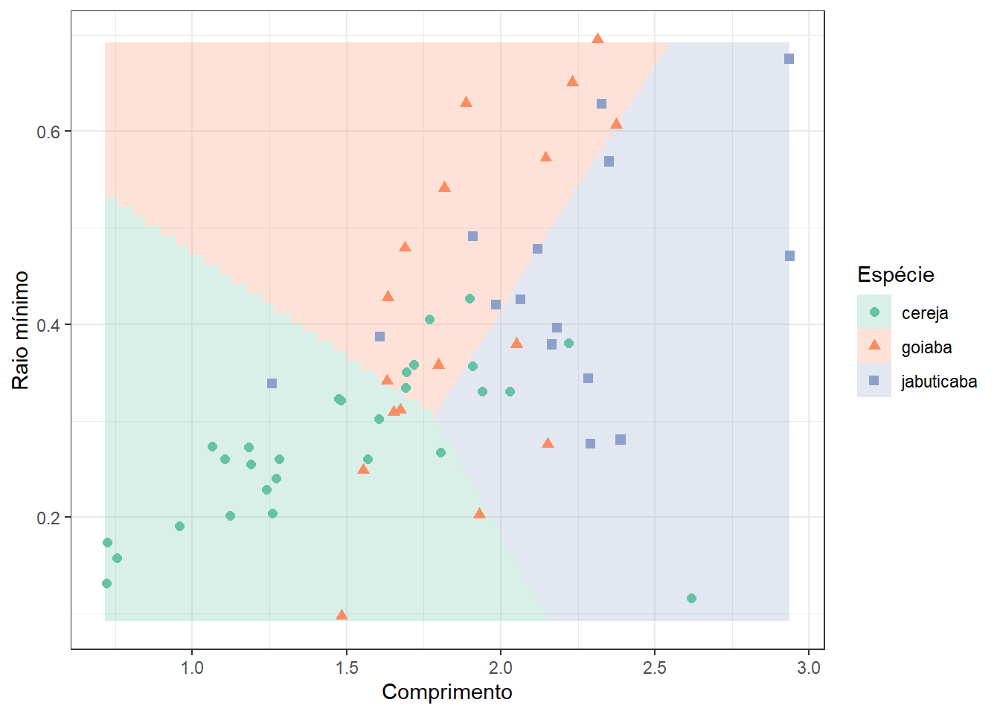
A Tabela 13.12 apresenta as métricas para os dados de teste do modelo de regressão logística multinomial para classificar folhas de jabuticaba, limão e mexerica. Como a sensitividade, a especificidade e a roc-auc são medidas para cada classe em relação às remanescentes, os valores exibidos consistem nas médias para as três classes.
| Métrica | Valor |
|---|---|
| Acurácia | 0.62 |
| Sensitividade | 0.61 |
| Especificidade | 0.81 |
| roc_auc | 0.81 |
Finalmente, a Figura 13.10 apresenta a curva ROC para os dados de teste do modelo de regressão logística multinomial para classificar folhas de jabuticaba, limão e mexerica segundo o comprimento e o raio mínimo. Conforme esperado, observa-se um pior resultado para a classe limão.
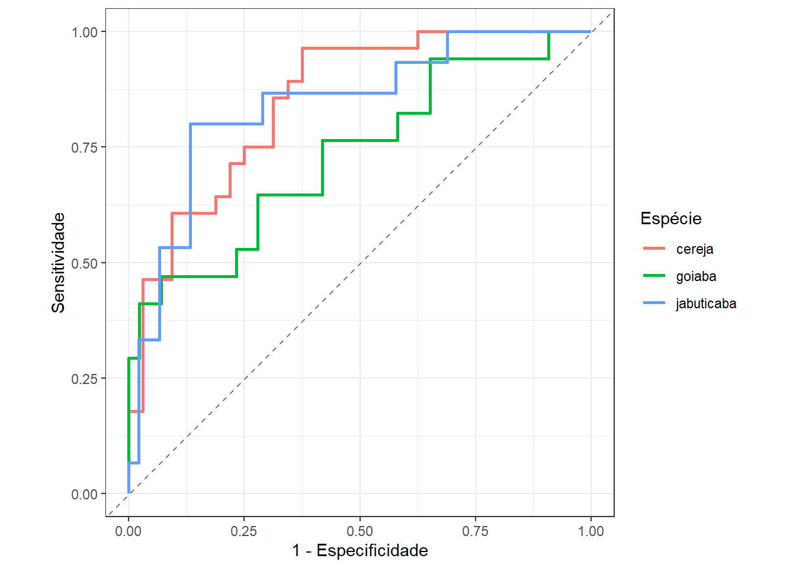
13.5 Regularização rígida e LASSO em regressão logística
Assim como na regressão linear para respostas contínuas, a regressão logística também permite a aplicação de técnicas de regularização como regressão logística rígida e LASSO tanto para casos binários, casos multinomiais considerando uma ou mais variáveis independentes.
Na regressão logística rígida subtrai-se no log-verossimilhança uma penalização proporcional ao quadrado da norma dos coeficientes, conforme Equação 13.11.
\[ \ell_\lambda^{\text{Ridge}}(\beta) = \ell(\beta) - \lambda \sum_{j=1}^{p} \beta_j^2 \tag{13.11}\]
ou, em notação vetorial conforme Equação 13.12.
\[ \ell_\lambda^{\text{Ridge}}(\beta) = \ell(\beta) - \lambda \beta^T\beta \tag{13.12}\]
Importante
Como queremos maximizar o log da máxima verossimilhança, deve-se subtrair o termo de penalização, uma vez que deseja-se penalizar a função, diminuindo-a com o crescimento dos coeficientes, de forma a evitar a inflação destes devido a multicolineariedade. Na regressão múltipla por mínimos quadrados para respostas medidas em domínio real, \(y \in \mathbb{R}\), onde se minimiza uma função perda quadrática, tal termo é somado.
A condição de primeira ordem (gradiente) modificada é apresentada na Equação 13.13.
\[ \frac{\partial l_\lambda^{\text{Ridge}}(\beta)}{\partial \beta} = \sum_{i=1}^N \mathbf{x}_i (y_i - p(\mathbf{x}_i, \beta)) - 2\lambda \beta \tag{13.13}\]
E a Hessiana penalizada fica conforme Equação 13.14.
\[ \frac{\partial^2 \ell_\lambda^{\text{Ridge}}(\beta)}{\partial \beta \partial \beta^T} = - \sum_{i=1}^N \mathbf{x}_i \mathbf{x}_i^T p_i(1 - p_i) - 2\lambda \mathbf{I} \tag{13.14}\]
A atualização no método de Newton-Raphson é ajustada considerando tais modificações segundo a Equação 13.15.
\[ \beta_{t+1}=\beta_t - \Biggl(\frac{\partial^2 \ell_\lambda^{\text{Ridge}}(\beta)}{\partial \beta \partial\beta^T}\Biggr)^{-1}\frac{\partial \ell_\lambda^{\text{Ridge}}(\beta)}{\partial \beta} \tag{13.15}\]
No caso da penalização LASSO, aplica-se uma penalidade proporcional à soma dos módulos dos coeficientes, conforme Equação 13.16
\[ \ell_\lambda^{\text{Lasso}}(\beta) = \ell(\beta) - \lambda \sum_{j=1}^{p} |\beta_j| \tag{13.16}\]
Como a Equação 13.16 não é diferenciável, são usados métodos de otimização baseados em subgradiente ou descentes coordenados.
Ambas as abordagens de regularização visam evitar overfitting, melhorar a generalização e facilitar a interpretação em contextos de multicolineariedade.
A Tabela 13.13 apresenta as primeiras linhas de um conjunto de dados de folhas de cereja, goiaba e jabuticaba em função de variáveis dimensionais. Devido a multicolineariedade entre os preditores é possível que a regularização melhore os resultados de classificação.
| especie | area | perimeter | radius.mean | radius.sd | radius.min | radius.max | majoraxis | eccentricity |
|---|---|---|---|---|---|---|---|---|
| goiaba | 1.8872 | 5.1030 | 0.8240 | 0.1681 | 0.5724 | 1.1024 | 2.1460 | 819 |
| cereja | 0.4061 | 2.7236 | 0.4056 | 0.1363 | 0.2281 | 0.6761 | 1.1794 | 920 |
| jabuticaba | 1.2724 | 4.1046 | 0.6641 | 0.1698 | 0.4259 | 0.9995 | 1.8588 | 873 |
| goiaba | 2.1489 | 6.0727 | 0.9169 | 0.2830 | 0.4716 | 1.4317 | 2.7118 | 909 |
| cereja | 0.6389 | 3.7286 | 0.5221 | 0.2220 | 0.2011 | 0.9091 | 1.8397 | 967 |
| jabuticaba | 1.1577 | 3.6601 | 0.6121 | 0.1125 | 0.4467 | 0.8154 | 1.5885 | 797 |
A Tabela 13.14 apresenta um modelo de regressão logística com regularização LASSO para classificar folhas de cereja, goiaba e jabuticaba em função de variáveis dimensionais. Para busca e otimização do \(\lambda\) foi realizada uma validação cruzada com 5 dobras. O hiperparâmetro de regularização foi otimizado, \(\lambda = 1.6 \times 10^{-4}\), sendo obtida uma acuracidade de 0,89 na validação cruzada. A Figura 13.11 plota a acuracidade em função do \(\lambda\), sendo obtida uma acuracidade igual a 0,88.
| class | term | estimate | penalty |
|---|---|---|---|
| cereja | (Intercept) | −11.72144 | 0.00016 |
| cereja | area | 0.00000 | 0.00016 |
| cereja | perimeter | 0.00000 | 0.00016 |
| cereja | radius.mean | 0.00000 | 0.00016 |
| cereja | radius.sd | 0.00000 | 0.00016 |
| cereja | radius.min | 13.89482 | 0.00016 |
| cereja | radius.max | 19.18885 | 0.00016 |
| cereja | majoraxis | −21.95157 | 0.00016 |
| cereja | eccentricity | 24.67054 | 0.00016 |
| goiaba | (Intercept) | 11.57903 | 0.00016 |
| goiaba | area | −14.54697 | 0.00016 |
| goiaba | perimeter | 7.38812 | 0.00016 |
| goiaba | radius.mean | 133.14183 | 0.00016 |
| goiaba | radius.sd | −17.44602 | 0.00016 |
| goiaba | radius.min | −7.62790 | 0.00016 |
| goiaba | radius.max | −0.47980 | 0.00016 |
| goiaba | majoraxis | 12.68187 | 0.00016 |
| goiaba | eccentricity | 0.00000 | 0.00016 |
| jabuticaba | (Intercept) | 0.14241 | 0.00016 |
| jabuticaba | area | 5.40919 | 0.00016 |
| jabuticaba | perimeter | 0.00000 | 0.00016 |
| jabuticaba | radius.mean | 0.00000 | 0.00016 |
| jabuticaba | radius.sd | 13.45923 | 0.00016 |
| jabuticaba | radius.min | 0.00000 | 0.00016 |
| jabuticaba | radius.max | 0.00000 | 0.00016 |
| jabuticaba | majoraxis | 0.00000 | 0.00016 |
| jabuticaba | eccentricity | −12.01721 | 0.00016 |
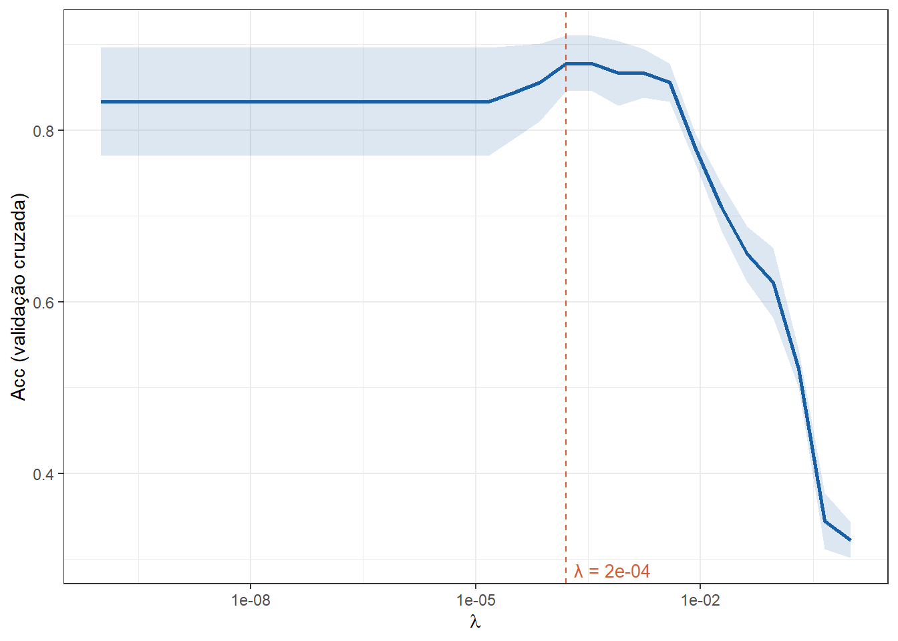
A Figura 13.12 exibe um gráfico dos coeficientes em função do parâmetro \(\lambda\). Pode-se observar que, à medida que a penalização de encolhimento, \(\lambda\), aumenta, os coeficientes dimimuem. É importante observar também, em consoância com os resultados da Tabela 13.14, que a regularização LASSO, além de encolher, escolhe variáveis, uma vez que alguns coeficientes são anulados, evitando a multicolineariedade.
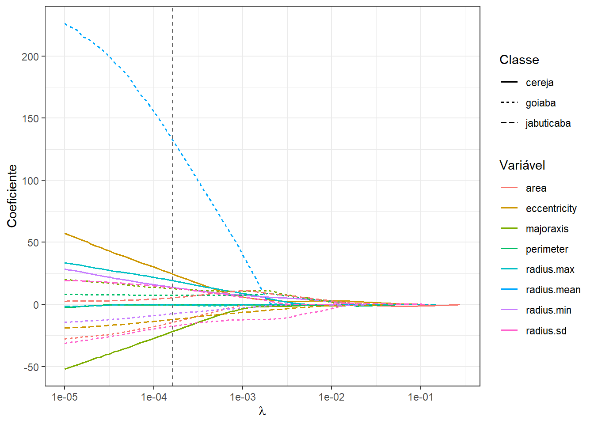
A Tabela 13.15 apresenta a matriz de confusão do modelo de regressão logística LASSO para classificar folhas de cereja, goiaba e jabuticaba. Já a Figura 13.13 apresenta as curvas ROC para as três espécies. Observa-se, tanto pelas métricas quanto pelas curvas ROC, uma melhora expressiva comparativamente ao modelo de regressão logística multinomial em função de duas variáveis sem regularização.
| Previsto | cereja | goiaba | jabuticaba |
|---|---|---|---|
| cereja | 25 | 1 | 0 |
| goiaba | 0 | 15 | 1 |
| jabuticaba | 3 | 1 | 14 |
| Métrica | Valor |
|---|---|
| Acurácia | 0.90 |
| Sensitividade | 0.90 |
| Especificidade | 0.95 |
| roc_auc | 0.97 |
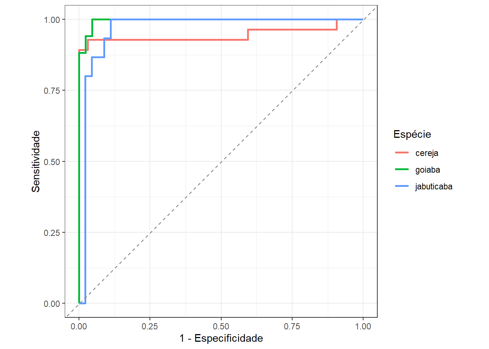
13.6 Regressão logística por componentes principais e outras possibilidades
Assim como na regressão múltipla por mínimos quadrados para respostas contínuas, na regressão logística a análise de componentes principais também pode ser usada para tratar a multicolineariedade dos preditores. O objetivo da análise seria o mesmo de obter novas variáveis não correlacionadas que detêm parte considerável da informação das variáveis independentes originais a partir das quais será realizada a regressão logística.
Ademais, é possível considerar termos polinomiais e de interação e até mesmo expansões de base, como splines e modelos generalizados aditivos (GAM).
13.7 Implementações em R
A seguir serão expostas as implementações necessárias para se obter os resultados do capítulo.
13.7.1 Regressão logística binária simples
Carregando as bibliotecas (pacotes) para análise.
library(dplyr)
library(sjdatar)
library(yardstick)
library(tidymodels)
library(tune)Carregando o conjunto de dados folhasfrutas do pacote sjdatar. A resposta está na coluna especie, sendo esta filtrada para apenas duas categorias e um preditor, o comprimento ou majoraxis, visando exemplificar a regressão logística binária simples. Ao fazer mutate(especie = factor(especie, levels = c("mexerica", "limao"))) além de transformar em especie em fator, considera-se “mexerica” como categoria de referência a ser prevista. Caso mão fossem definidos os níveis em levels, seria por ordem alfabética.
data(folhasfrutas)
dadosml <- folhasfrutas |>
filter(especie %in% c("limao", "mexerica")) |>
select(especie, majoraxis) |>
mutate(especie = factor(especie, levels = c("mexerica", "limao")))
dadosml |>
slice_sample(n = nrow(dadosml)) |>
head()Separando dados de teste e de treino.
set.seed(36)
dados_split <- initial_split(dadosml, prop = 0.60)
dados_treino <- training(dados_split)
dados_teste <- testing(dados_split)Definindo a receita, método, workflow e realizando o treinamento do modelo.
receitaml <- recipe(formula = especie ~ majoraxis, data = dados_treino)
logit_model <- logistic_reg(penalty=0) %>%
set_engine("glm")
ml_workflow <-
workflow() |>
add_recipe(receitaml) |>
add_model(logit_model)
ml_fit <-
ml_workflow |>
fit(data = dados_treino)
ml_fit |>
extract_fit_parsnip() |>
tidy()Plotando modelo com dados de teste.
dados_teste <- dados_teste |> mutate(especie_num = as.numeric(especie == "limao"))
dados_treino <- dados_treino |> mutate(especie_num = as.numeric(especie == "limao"))
ggplot(dados_teste, aes(x = majoraxis, y = especie_num, color = especie)) +
geom_smooth(
data = dados_treino,
mapping = aes(x = majoraxis, y = especie_num),
method = "glm",
method.args = list(family = "binomial"),
fill = "grey",
col = "black"
) +
geom_point(size=2) +
scale_colour_brewer(palette = "Set2") +
scale_y_continuous(
breaks = c(0, 1),
labels = c("limão", "mexerica")
) +
labs(
x = "Comprimento",
y = "Probabilidade (mexerica)",
col = "Espécie"
) +
theme_bw()13.7.2 Regressão logística múltipla
Considernado além do comprimento o raio mínimo, `radius.min``, como preditor.
dadosml2 <- folhasfrutas |>
filter(especie %in% c("limao", "mexerica")) |>
select(especie, majoraxis, radius.min) |>
mutate(especie = factor(especie, levels = c("mexerica", "limao")))
set.seed(9)
dadosml2 |>
slice_sample(n = nrow(dadosml)) |>
head()set.seed(36)
dados_split2 <- initial_split(dadosml2, prop = 0.60)
dados_treino2 <- training(dados_split2)
dados_teste2 <- testing(dados_split2)receitaml2 <- recipe(formula = especie ~ majoraxis + radius.min, data = dados_treino2) |>
step_normalize(all_numeric_predictors())
ml_workflow2 <-
workflow() |>
add_recipe(receitaml2) |>
add_model(logit_model)
ml_fit2 <-
ml_workflow2 |>
fit(data = dados_treino2)
ml_fit2 |>
extract_fit_parsnip() |>
tidy()A matriz de confusão é obtida com o comando conf_mat do pacote yardstick, devendo ser fornecidas as observações da resposta, truth, e a classificação em estimate.
predicoes <- predict(ml_fit2, dados_teste2) |>
bind_cols(dados_teste2)
cm1 <- conf_mat(predicoes, truth = especie, estimate = .pred_class)
cm1Gráfico com fronteira de decisão e dados de teste. Deve-se definir uma malha de valores dos dois preditores com expand.grid e avalir o modelo neste grid para gerar a fronteira de classificação plotada com geom_raster e ggplot. Os dados de teste são adicionados com geom_point.
grid <- expand.grid(majoraxis = seq(min(dados_teste2$majoraxis),
max(dados_teste2$majoraxis), by = .01),
radius.min = seq(min(dados_teste2$radius.min),
max(dados_teste2$radius.min), by = .01))
grid$.pred <- predict(ml_fit2, new_data = grid)$.pred_class
grid <- grid |>
mutate(especie = as.factor(.pred))
ggplot() +
scale_colour_brewer(palette = "Set2") +
scale_fill_brewer(palette = "Set2") +
geom_raster(data=grid, mapping=aes(x = majoraxis, y = radius.min, fill = especie), alpha = 0.25) +
geom_point(data=dados_teste2, mapping=aes(x = majoraxis, y = radius.min, color = especie, pch = especie), size = 2) +
labs(x = "Comprimento", y = "Raio mínimo", col = "Espécie", fill = "Espécie", pch = "Espécie") +
theme_bw()Para obtenção das métricas acuracidade, sensitividade e especificidade é necessária a previsão discreta ou classificação, enquanto para obter a área abaixo da curva roc, é necessária a previsão da probabbilidade de pertencer à classe de interesse, obtida com predict com o argumento type = "prob". Definem-se as métricas de interesse em metric_set.
pred_completo2 <- bind_cols(
predict(ml_fit2, dados_teste2),
predict(ml_fit2, dados_teste2, type = "prob"),
dados_teste2
)
metricas <- metric_set(accuracy, sensitivity, specificity, roc_auc)
metricas(pred_completo2,
truth = especie,
estimate = .pred_class,
.pred_mexerica)O comando roc_curve viabiliza a obtenção dos dados para obter a curva ROC, sendo esta plotada com o comando autoplot.
roc_data <- roc_curve(pred_completo2, truth = especie, .pred_mexerica)
autoplot(roc_data)13.7.3 Regressão logística LASSO
Neste exemplo são consideradas três classes e outas variáveis preditoras disponíveis.
dadosml3 <- folhasfrutas |>
filter(especie %in% c("cereja","goiaba","jabuticaba")) |>
mutate(especie = as.factor(especie))
set.seed(13)
dadosml3 |>
slice_sample(n = nrow(dadosml)) |>
head()set.seed(36)
dados_split3 <- initial_split(dadosml3, prop = 0.60)
dados_treino3 <- training(dados_split3)
dados_teste3 <- testing(dados_split3)É importante salientar que o comando logistic_reg só serve para regressão logística binária, sendo o comando multinom_reg usado para o caso multinomial. O comando tune_grid realiza otimização de hiperparâmetros, neste caso da penalização de encolhimento via LASSO, \(\lambda\). Para tal, ele necessita de um grid de candidatos, obtido neste exemplo com o comando grid_regular. Ademais, é necessário o particionamento dos dados para realizar a validação por \(k\)-dobras, obtido via vfold_cv e especiicada em resamples. Ao final da busca, deve-se separar o \(\lambda\) ótimo via select_best. Em sequência, deve-se finalizar o workflow via finalize_workflow e estimar o modelo via fit com a penalização ótima e os dados de treino.
logit_model_rig <- multinom_reg(penalty = tune(), mixture = 1) |>
set_engine("glmnet",
path_values = 10^seq(-5, 0, length.out = 100))
receitaml_rid <- recipe(especie ~ ., data = dados_treino3) |>
step_normalize(all_numeric_predictors()) |>
step_impute_median(all_numeric_predictors())
ml_workflow_rid <- workflow() |>
add_recipe(receitaml_rid) |>
add_model(logit_model_rig)
grid_penalty <- grid_regular(penalty(), levels = 30)
set.seed(42)
cv_folds <- vfold_cv(dados_treino3, v = 5)
tune_result <- tune_grid(
ml_workflow_rid,
resamples = cv_folds,
grid = grid_penalty,
metrics = metric_set(accuracy)
)
# autoplot(tune_result) + theme_bw()
best_penalty <- select_best(tune_result, metric = "accuracy")
# best_penalty
ml_fit_rid_final <- ml_workflow_rid |>
finalize_workflow(best_penalty) |>
fit(data = dados_treino3)
ml_fit_rid_final |>
extract_fit_parsnip() |>
tidy()Referências
Hastie, T., Tibshirani, R., Friedman, J. H., & Friedman, J. H. (2009). The elements of statistical learning: data mining, inference, and prediction (Vol. 2, pp. 1-758). New York: springer.
Gareth, J., Daniela, W., Trevor, H., & Robert, T. (2013). An introduction to statistical learning: with applications in R. Springer.